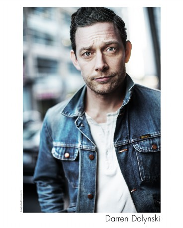

#2499 Für immer Adaline
Alternativ: The Age of Adaline

 IMDB-Wertung: 7.2 / 10
IMDB-Wertung: 7.2 / 10  Metascore: 51
Metascore: 51 
1933 hörte Adaline Bowman (Blake Lively) auf, zu altern. Sie war 29 und ein Unfall bewirkte, dass sie 29 blieb. Die folgenden 80 Jahre waren einsam. Adaline verzichtete auf eine der wichtigsten Erfahrungen, Quelle von Kraft und Glück – die Liebe. Nie in dieser langen Zeit erlaubte sie sich, jemandem nahe zu kommen, immer war die Angst zu groß, dass ihr Geheimnis enthüllt wird. Doch dann katalysiert eine Zufallsbegegnung den Sinneswandel. Mit dem sympathischen Philanthropen Ellis Jones (Michiel Huisman) lernt Adaline einen Mann kennen, der ihr lange unterdrücktes Verlangen nach Liebe weckt. Soll sie seinetwegen mit ihrer Regel brechen? Soll sie ihm von ihrem außergewöhnlichen Zustand erzählen? Als auf einem Wochenende mit Ellis' Eltern William (Harrison Ford) und Kathy (Kathy Baker) die Wahrheit ans Licht zu kommen droht, trifft Adaline eine Entscheidung von großer Konsequenz…
Jahr: 2015
Dauer: 112 Minuten
FSK: 6
Land: USA Studio: LionsgateTonspuren: DTS - ,
Untertitel: Deutsch,
Auflösung: 1080p (1920x808) Größe: 7086 MB
Genre: Drama, Fantasy, Liebe
Regisseur: Lee Toland Krieger
Drehbuch: J. Mills Goodloe, Salvador Paskowitz, J. Mills Goodloe, J. Mills Goodloe, Salvador Paskowitz
Soundtrack: Rob Simonsen
Darsteller:
 Blake Lively als Adaline Bowman
Blake Lively als Adaline Bowman Michiel Huisman als Ellis Jones
Michiel Huisman als Ellis Jones Harrison Ford als William Jones
Harrison Ford als William Jones Ellen Burstyn als Flemming
Ellen Burstyn als Flemming Kathy Baker als Kathy Jones
Kathy Baker als Kathy Jones Amanda Crew als Kikki Jones
Amanda Crew als Kikki Jones Lynda Boyd als Regan
Lynda Boyd als Regan Hugh Ross als Narrator
Hugh Ross als Narrator Richard Harmon als Tony
Richard Harmon als Tony Fulvio Cecere als Cab Driver
Fulvio Cecere als Cab Driver- Anjali Jay als Cora
 Hiro Kanagawa als Kenneth
Hiro Kanagawa als Kenneth- Peter J. Gray als Clarence James Prescott
- Izabel Pearce als Flemming, Age 5
- Cate Richardson als Flemming, Age 20
- Jane Craven als Miriam
- Noel Johansen als 1950's Policeman
 Aaron Craven als 1950's FBI Agent
Aaron Craven als 1950's FBI Agent Primo Allon als 1940's Officer #1
Primo Allon als 1940's Officer #1- Chris William Martin als Dale Davenport
- Mark Ghanimé als New Year's Eve Stranger
- Shaker Paleja als Hotel Doorman
 Daniel Bacon als Boat Tunnel Guide
Daniel Bacon als Boat Tunnel Guide Barclay Hope als Financial Advisor
Barclay Hope als Financial Advisor Robert Moloney als 1950's Financial Advisor
Robert Moloney als 1950's Financial Advisor Lane Edwards als Veterinarian
Lane Edwards als Veterinarian- Anthony Ingruber als Young William Jones
 Serge Houde als Good Samaritan
Serge Houde als Good Samaritan- Alison Wandzura als Paramedic #1
- Demord Dann als Paramedic #2
- Mike Li als Cop , uncredited
 Craig March als Fireman , uncredited
Craig March als Fireman , uncredited Yaroslav Poverlo als Photographer , uncredited
Yaroslav Poverlo als Photographer , uncredited- Julia Torrance als Young Flemming, 13 , uncredited
-  Darren Dolynski als 1940's Officer #2
 Dee Jay Jackson als 1960's Cab Driver
Dee Jay Jackson als 1960's Cab Driver- Tony Levins als Ellis Apartment Super
- Keith McCafferty als 1960's Hippie Photographer
- Grace Chin als E.R. Doctor
- Barrett James als Modern Man on Bench , uncredited
- Mark Lavell als Hippie , uncredited
- John Lobato als Hippie , uncredited
- Myles McCarthy als Altar Boy , uncredited
- Breanna Podlasly als Mourner , uncredited
- Holland Sanders als Alyssa , uncredited
Datei: X:\2015(A-F)\Für immer Adaline (2015, FSK6, 1920x808).mkv seit 13.11.2015
Festplatte: HD 2015(A-Z)
 Es gibt insgesamt 143 Filme in der Gruppe '2015(A-F)'
Es gibt insgesamt 143 Filme in der Gruppe '2015(A-F)'